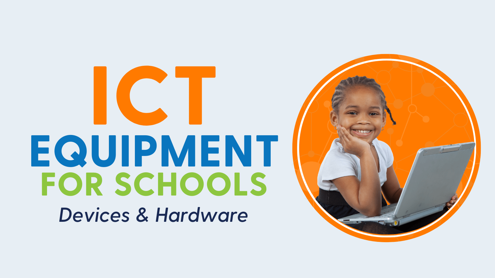

ICT Technician | Facilitator | Teacher

Welcome to my personal website. I am Kiyimba Erisa (ERITEC), an ICT Technician, Facilitator, and Teacher at Busiika Muslim Secondary School. I am passionate about technology, education, digital transformation, and helping learners acquire practical ICT skills for the modern world.
at eritec we also equip ict accessories to school at acheaper price
Computer fundamentals, Microsoft Office, Internet usage, AI basics, and digital literacy.
Computer maintenance, software installation, troubleshooting, and system optimization.
Administration, maintenance, and effective utilization of school computer laboratories.
Advising schools and organizations on ICT integration, digital transformation, and technology adoption.
This blog shares educational resources and articles on:
Kiyimba Erisa (ERITEC)
ICT Technician | Facilitator | Teacher
Busiika Muslim Secondary School
+256 704341329 -kiyimbaerisa@gmail.com
Send Message